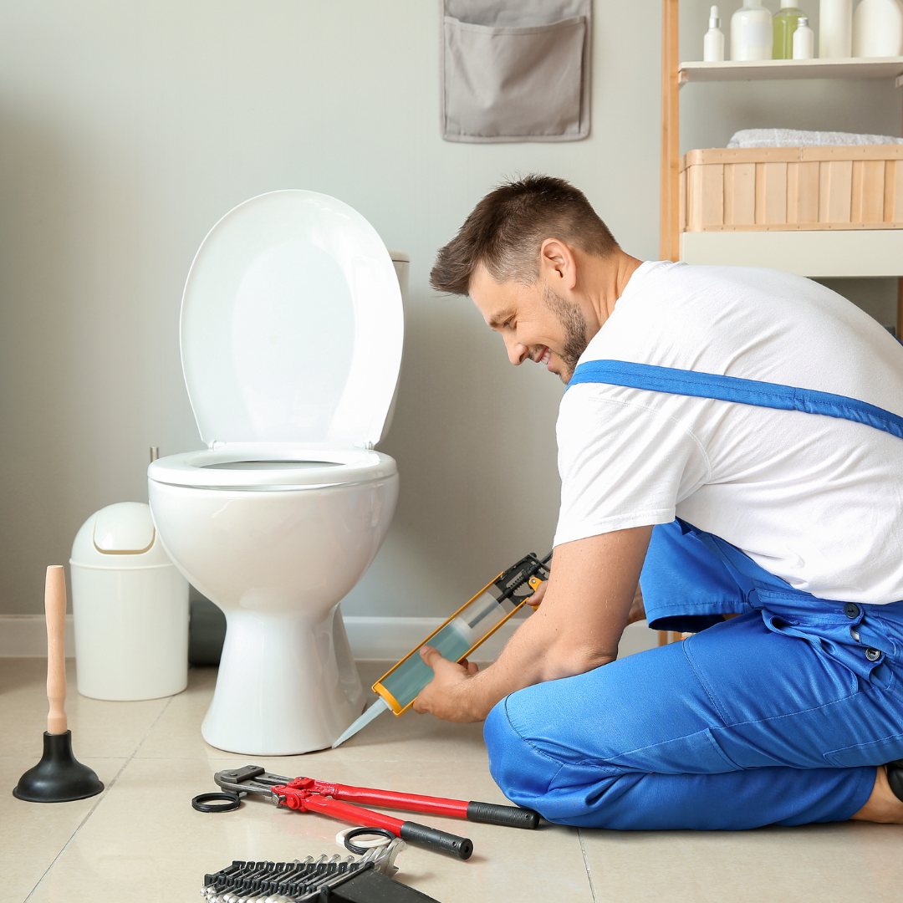

Slab leak repair in Boynton Beach is one of the most common calls in older neighborhoods, because nearly every home here is built on a concrete slab. When a water line under that slab fails, the water has only two ways to go: sideways through the soil, or up through the floor.
Left alone, a slab leak undermines the soil supporting the slab. That leads to settling, cracked tile and doors that stop closing. It also runs your water bill up week after week.
The good news is that repair no longer means jackhammering the whole floor. In most homes we can pinpoint the leak within inches, and often reroute the line overhead instead of opening the slab at all.

Warning signs
How to Tell If You Have a Slab Leak Under Your Concrete Floor
Slab leaks have a distinct set of symptoms. Two or three together is close to a confirmation.
- A warm or hot patch on a tile or wood floor
- Running water sound with every fixture closed
- Water seeping up at the base of a wall or in a shower pan
- Sudden jump in the water bill
- Tile cracking or grout lifting in a line across a room
- A damp or musty smell in one part of the house
- Low water pressure throughout the home
- Mildew under carpet with no roof or window source
A warm floor almost always means the hot water line is the one leaking. Shut the water heater supply off and see whether the sound stops.
What the visit includes
Slab Leak Repair Options: Spot Repair, Reroute or Repipe
There are three real ways to fix a slab leak. The right one depends on pipe age, location and how many leaks you have had.
Spot repair
Open a small section of slab, replace the failed length of pipe, and patch the concrete. Best for a first leak in sound pipe.
Overhead reroute
Abandon the under-slab run and route a new line through walls and the attic. No concrete cutting in most cases.
Partial repipe
Replace one branch, such as all hot water lines, when the rest of the system is still in good condition.
Full repipe
For homes on their third or fourth leak. New PEX or copper throughout, and the slab is left alone for good.
Warm spot on your floor?Call for slab leak detection today, with repair and reroute options priced side by side.

The process
How a Slab Leak Is Located Without Breaking the Whole Floor
The fear with slab leaks is a jackhammer through the middle of the living room. Modern detection makes that unnecessary in nearly every case.
Isolate the system
We close the water heater supply first. If the sound of running water stops, the leak is on the hot side, which is true in most homes. That single test cuts the search area in half.
Pressure test the lines
Hot and cold are tested separately with gauges to confirm which line is losing pressure and how fast. A fast loss and a slow weep call for different approaches.
Acoustic listening
Pressurized water escaping under concrete makes a distinct sound. Ground microphones and amplifiers trace it through tile and slab, and the loudest point marks the break.
Thermal imaging
On hot water leaks, an infrared camera reads the temperature plume through flooring, which confirms what the acoustic equipment heard and narrows the mark to inches.
Mark, then decide
Only once the spot is marked do we discuss opening the slab at all. In many single-story homes with attic access, rerouting the line overhead is faster, cheaper once flooring is priced in, and permanently takes that pipe out of the slab.
Boynton Beach conditions
Why Boynton Beach Slabs Leak
Age and chemistry. Thousands of Boynton Beach homes were built between the late 1950s and the 1970s, when soft copper tubing was run directly through the slab pour. Concrete is alkaline, Florida soil holds moisture year-round, and the water inside is hard. Copper caught between those forces pits from the outside in and the inside out.
Movement makes it worse. Copper expands as hot water passes through it. Where the pipe rubs against concrete or rebar with no sleeve, it wears a thin spot. That is why the hot line fails first in most homes.
Our shallow water table matters too. Saturated soil under a slab conducts and spreads the leak, so by the time you feel a warm floor the wet area may already be several feet across. We map moisture before choosing between a spot repair and a reroute so you are not paying to open the wrong section of floor.
Structural risk
What an Untreated Slab Leak Does to a Florida Foundation
A slab leak is not only a plumbing problem. Water under concrete changes the soil that supports the house, and that is where the expensive damage starts.
Soil washout and settling
Continuous flow carries fine sand away from beneath the slab, leaving voids. The concrete then bridges an unsupported span until it cracks. The visible signs come later: tile cracking in a line across a room, grout lifting, doors and windows that stop closing squarely.
Moisture inside the envelope
Saturated soil pushes moisture up through the slab and into baseboards, drywall and cabinetry. In Florida humidity, mold follows quickly, and remediation frequently costs more than the plumbing repair would have.
Rising bills and wasted water
A pinhole under a slab can waste thousands of gallons a month. Because there is no puddle, homeowners often absorb higher bills for a year before investigating.
Why our water table makes it worse
Boynton Beach sits low, and already damp soil spreads the leak further before any surface sign appears. By the time a floor feels warm, the wet area may be several feet across. That is why we map moisture extent before choosing between a spot repair and a reroute.
When one leak means more
When slab copper starts failing, the rest of the same-age pipe is close behind. Homeowners on their second or third leak almost always spend less over five years by repiping than by repairing again.
Pricing
Slab Leak Repair Cost in Boynton Beach, FL
A single spot repair in an accessible area is the least expensive path. An overhead reroute costs more in labor but avoids concrete work and floor replacement, which often makes it cheaper overall once you price new tile.
We quote every viable option side by side, with the trade-offs written out, so you can decide with real numbers instead of pressure.
- Depth and location of the leak under the slab
- Spot repair versus reroute versus full repipe
- Flooring type over the leak, tile, wood or carpet
- Number of previous leaks in the same system
- Concrete cutting, patching and cleanup
- Permit and inspection for repipe work
Get the number before you book. Call (833) 567-2788 and describe the problem. You get a realistic price range on the phone and a firm written price at the door, before any work begins.
FAQs
Slab Leak FAQs
Can a slab leak damage my foundation?
Yes. Constant water washes fine soil out from under the slab, which leads to settling and cracking. Early repair prevents most of it.
Is rerouting better than cutting the slab?
Often, yes. A reroute takes the old pipe out of service permanently and avoids concrete work, floor replacement and dust in the house.
How long does the repair take?
A spot repair is usually one day. A reroute of one or two lines takes one to two days. A full repipe runs two to four days.
Will my homeowners insurance cover it?
Most Florida policies pay to access the leak and repair the damage, though not the pipe itself. We document the work for your adjuster.
If I have one slab leak, will I get more?
Frequently. When copper starts failing, the rest of the same-age pipe is not far behind. That is when a repipe becomes the smarter spend.
Related plumbing services
Plumbing Services Related to Slab Leak Repair
Problems rarely arrive alone. These are the services homeowners most often book alongside this one.
Emergency Plumber
When a supply line lets go or sewage comes up through a floor drain, the first job is stopping the water and the second is telling you what the repair costs. Our emergency plumbers in Boynton Beach walk you through the shutoff on the phone, arrive with a stocked truck, and hand you a written flat price before anything is opened up.
Drain Cleaning
Slow showers, gurgling sinks and a main line that backs up every few months are rarely one hair clog. They are grease, scale and old cast iron that has narrowed over decades. We clear the blockage with cabling or hydro jetting, then camera the pipe so you can see whether it was a clog or a damaged line causing it.
Water Heater Repair & Installation
No hot water, rusty hot water or a puddle under the tank each point somewhere different. We test elements, thermostats, gas valves and the anode rod before quoting, because a failed part costs a fraction of a new heater. When the tank really is finished, we replace 40 to 80 gallon units with the permit and haul-away included.
View all 16 plumbing services →
Slab Leak Repair Near You in Palm Beach County
- Slab Leak Repair in Delray Beach
- Slab Leak Repair in Lake Worth Beach
- Slab Leak Repair in Lantana
- Slab Leak Repair in Boca Raton
- Slab Leak Repair in Wellington
- Slab Leak Repair in Greenacres
- Slab Leak Repair in Hypoluxo
- Slab Leak Repair in Ocean Ridge
- Slab Leak Repair in Manalapan
- Slab Leak Repair in Palm Springs
- Slab Leak Repair in West Palm Beach
- Slab Leak Repair in Highland Beach
Warm spot on the floor?
Get a slab leak pinpointed today in Boynton Beach, with repair, reroute and repipe options priced side by side.